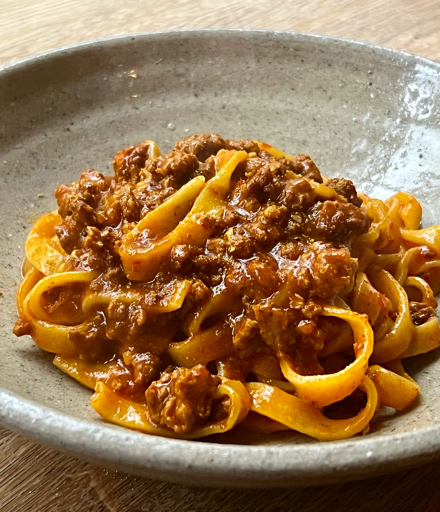

Home
Ragù pasta

Ingredients (for two people)
- 250g of tagliatelle pasta
- 500g mixed beef and pork mince
- 500g tomato passata
- 200g pancetta
- 3x stalks of celery, finely diced
- 2x carrots, finely diced
- 1x onion, finely diced
- 4x garlic cloves, finely diced
- 1x beef stock cube
- 250ml red wine
- One tablespoon of tomato puree
- Salt and pepper
Steps
- Start by heating a bit of oil in a large pan
- When hot, add onion, celery, carrots and cook on a medium heat with a pinch of salt
- Once become soft, add the garlic and mix until fragrant
- Add the pancetta and cook until tender
- Add the mince and cook all together, mixing frequently to ensure all the meat is throughly cooked
- Add the red wine on high heat and wait until the liquid disappears
- Add the stock cube, passata, puree, salt and pepper and mix
- Leave everything to boil. Once boiling, put on low heat and cover with a lid. Mix it often
- Boil the water for the pasta. Add the pasta and cook for 8 to 10 minutes
- Once the pasta is ready, strain it and mix it with the sauce